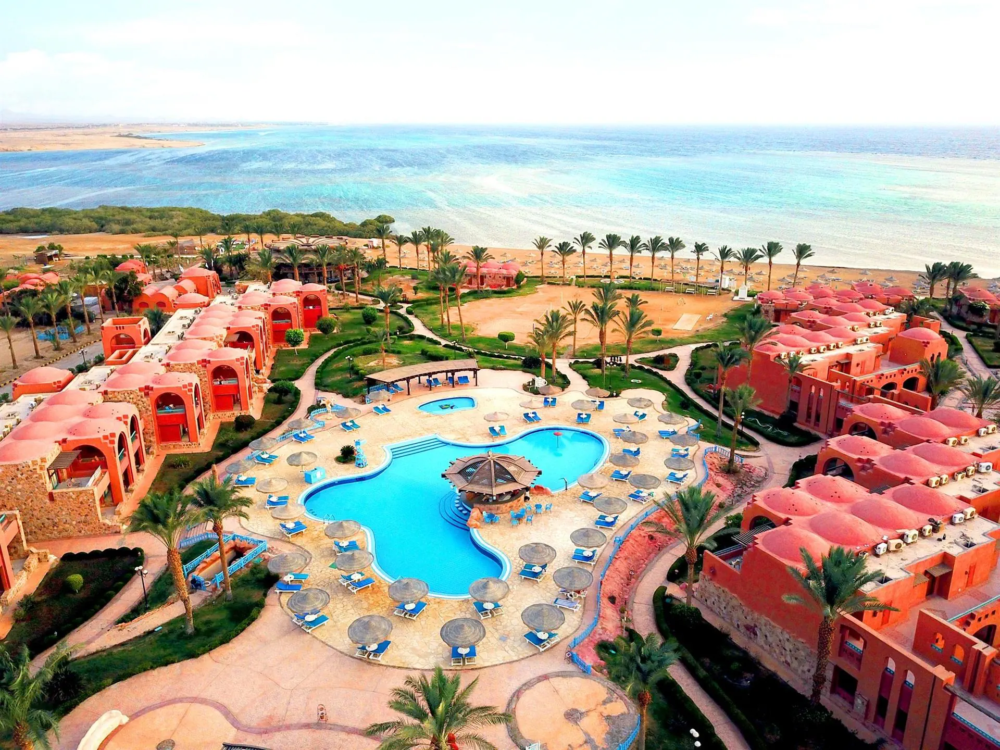

01. Integrated platform
Aviation, tourism and travel services under one investment vision.خدمات الطيران والسياحة والسفر ضمن رؤية استثمارية واحدة.
An integrated platform for hotel investment, resort development, hospitality operations, travel coordination, Hajj and Umrah, and tourism partnerships across Egypt and regional markets.منصة متكاملة للاستثمار الفندقي وتطوير المنتجعات وتشغيل الضيافة وتنسيق السفر والحج والعمرة والشراكات السياحية في مصر والأسواق الإقليمية.
Located within the Oriental Coast destination on the Red Sea along the Quseir-Marsa Alam Road, Swisstouch represents the founder's hospitality investment experience and a foundation for Rawafed's tourism platform.يقع منتجع سويس تاتش أورينتال ضمن وجهة أورينتال كوست على البحر الأحمر على طريق القصير - مرسى علم، ويمثل خبرة المؤسس في الاستثمار الفندقي وقاعدة لمنصة روافد السياحية.
The relevant contractual interests and rights are being considered for transition into the company framework, subject to applicable legal and commercial procedures.يجري النظر في نقل الحقوق والمصالح التعاقدية ذات الصلة إلى الإطار المؤسسي للشركة، وفق الإجراءات القانونية والتجارية المعمول بها.

A tourism investment entity under formation through an alliance between Rawafed Al Nile, Q Company affiliated with Abu Samra Group for Tourism, and an international investment partner.كيان استثماري سياحي قيد التأسيس من خلال تحالف بين روافد النيل وشركة Q التابعة لمجموعة أبو سمرا للسياحة وشريك استثماري دولي.
Aviation, tourism and travel services under one investment vision.خدمات الطيران والسياحة والسفر ضمن رؤية استثمارية واحدة.
Commercial representation and General Sales Agent agreements.التمثيل التجاري واتفاقيات وكيل المبيعات العام.
Develop, manage and operate hotels, resorts and tourism projects.تطوير وإدارة وتشغيل الفنادق والمنتجعات والمشروعات السياحية.
Airlines, tourism institutions and specialized service providers.شركات الطيران والمؤسسات السياحية ومقدمو الخدمات المتخصصون.
Regional and international growth guided by feasibility studies.نمو إقليمي ودولي يستند إلى دراسات الجدوى.
A specialized activity delivered through licensed tourism companies and service providers in Egypt, Saudi Arabia and regional markets, with a focus on coordinated pilgrimage and religious-visit programs.نشاط متخصص من خلال شركات السياحة المرخصة ومقدمي الخدمات في مصر والسعودية والأسواق الإقليمية، مع التركيز على تنسيق برامج الحج والزيارات الدينية.
Visa and travel coordination.
Arrival reception and assistance.
Fleet transport and group movement.
Hotel check-in and stay coordination.
Movement and service support.
Meals, support and departure coordination.